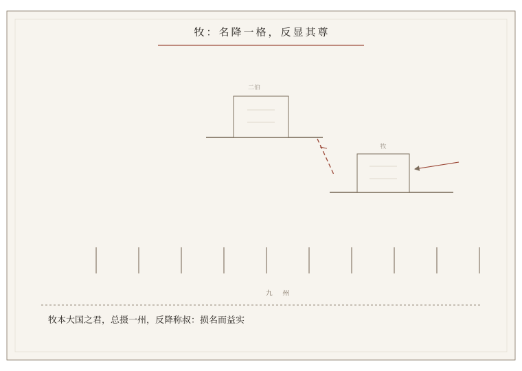

曲礼下 · 二·五十一 · 第 174 课
九州之长入天子之国称「牧」；天子同姓呼叔父、异姓呼叔舅；于外称侯，于其国称君。注「牧尊于大国之君，而谓之叔父，辟二伯也……礼或损之而益」。
说什么事：牧的称呼，以及「损之而益」四字。
落在哪一层：礼，兼及礼意。
为何编在此位：伯之下为牧。畿外之序，由二伯而九州之牧。
【经】九州之長，入天子之國曰「牧」。天子同姓，謂之「叔父」，異姓謂之「叔舅」，於外曰「侯」，於其國曰「君」。
【注】每一州之中，天子選諸侯之賢者，以為之牧也。《周禮》曰：「乃施典於邦國而建其牧。」牧尊於大國之君，而謂之叔父，辟二伯也。亦以此為尊。禮或損之而益，謂此類也。外，自其國之外，九州之中，曰侯者，本爵也。二王之後不為牧。
【疏】殷曰伯，周曰牧。此云牧，据《周礼》也。天子于每州之中选取贤侯一人，加一命，使主一州为牧。若入天子国，则自称曰牧。牧，养也，言其养一州之人，故《周礼》「八命作牧」是也。然伯不云入天子国者，伯不出，故不言入耳。「天子同姓谓之叔父，异姓谓之叔舅」者，牧劣于二伯，故天子谓之叔。叔，小也。父、舅，义如前。二伯云「摈于天子，曰天子之吏」，此不云摈于天子，是记者略之也。「于外曰侯」者，外谓其所封外九州内也，自称曰侯，侯是本爵。「于其国曰君」者，若与国内臣民言，犹自称为君也。大国之君是侯，使称伯；今选侯之贤者加一命为牧，则是尊贵于不牧之侯，而不谓为伯，降呼为叔父者，分陕已称伯，今牧若又呼为伯，则乱于分陕；若犹呼本称，则不见其异，故呼为叔，亦异常也。云「礼或损之而益」者，崔云：「州牧虽为侯封，皆是大国之君，本自称伯牧，今总摄众国，嫌其敌义，故更称叔，此是损也；叔名虽损，即是明其为牧，故谓之为益。」云「二王之后不为牧」，知不为牧者，以二王之后其爵称公，今经云「于外曰侯」，不言「于外曰公」，故知不为牧。
牧 疏「牧，养也，言其养一州之人」。
八命作牧 《周礼》命数。
叔 疏「叔，小也」。劣于二伯，故称叔。
损之而益 名号降而得其实。
二王之后 前代帝王之后，爵称公，不为牧。
九州之长入天子之国称「牧」。天子对同姓的称叔父，异姓的称叔舅。在本州之内称「侯」，在本国称「君」。
此节的重点不在牧，在「损之而益」四字。牧本是大国之君，爵为侯，本该称伯；一旦总摄一州，反被降称为「叔」。名号降了一格，却因此与他侯分别开来——这就是损之而益。
第一层 殷伯周牧 疏「殷曰伯，周曰牧」。同一职，两代两名。曲礼下所记多杂殷周，此又是一证。
第二层 伯不出，牧则入 疏「伯不云入天子国者，伯不出，故不言入」。二伯坐镇分陕，不入朝；牧则须入。一个「入」字，分出了两种权威的性质：一为守土，一为述职。
第三层 叔之义 疏「叔，小也」。牧比二伯低一格，故称叔。可注意者：这里的「小」不是德之小，是位之差。礼的称谓，先定位次，后及德义。
第四层 损之而益 崔氏说：称叔是损，因称叔而显出他是牧，是益。此四字是全部礼制的通则：礼常以降名的方式给出实权，以退让的方式给出尊贵。
与今日何干 凡组织里的「副总」「代管」「牵头」，多是损名而益实。名与实不合，往往不是混乱，是安排。
| 左 | 右 |
|---|---|
| 九州之长入天子之国曰牧 | 八命作牧，牧，养也 |
| 同姓叔父，异姓叔舅 | 牧劣于二伯，故称叔 |
| 于外曰侯 | 侯是本爵 |
| 于其国曰君 | 与国内臣民言 |
| 礼或损之而益 | 称叔是损，显牧是益 |
| 二王之后不为牧 | 其爵称公，故不言侯 |
画两级台阶：上一级一枚较高的方牌（示二伯），下一级一枚稍低的方牌（示牧），两牌之间以一道向下的短斜线相连，线端作小缺口（示降名）。低牌右侧另画一枚小箭头向上、指向低牌本身（示由降而得显）。台阶之下画九道等距短竖（示九州）。不写文字。赭色只用在向下的那道短斜线。
